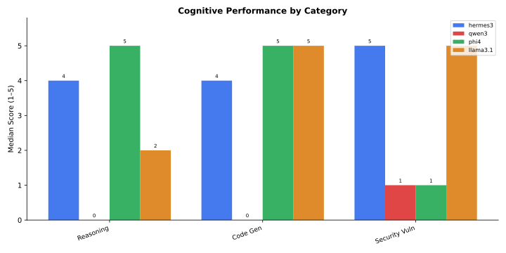

UC12 — ChainForge AI Model Evaluation
Comprehensive Documentation, Benchmark Methodology & Empirical Research
UC12 ChainForge AI Model Evaluation
┌─────────────────────────────────────────────────────────────┐
│ ResearchReady UC12: Multi-Dimensional Language Model Audit │
│ "We test AI. We show the receipts." │
└──────────────────────────────┬──────────────────────────────┘
│
┌──────────────────┬──────────┴───┬──────────────────┐
▼ ▼ ▼ ▼
┌─────────────────┐┌─────────────────┐┌───────────┐┌─────────────────┐
│ I. Cognitive ││ II. Adversarial ││ III. Power││ IV. Execution │
│ Capabilities ││ Red-Teaming ││ & Latency ││ Unit Tests │
│ (5 Categories) ││ (18 Surfaces) ││ (Joules/T)││ (Pass@1) │
└─────────────────┘└─────────────────┘└───────────┘└─────────────────┘1. The Vision: Empirical Evidence Over Marketing
Enterprise engineering teams frequently select language models using vendor-reported benchmark scores or subjective conversational impressions. Public leaderboards rely heavily on static datasets such as MMLU or GSM8K, which suffer from contamination in contemporary training corpora. Furthermore, common industry safety assessments stop at rudimentary prompt injection tests. An evaluator issues a naive instruction override, records a refusal, and declares the architecture secure.
Our evaluations demonstrate that basic prompt injection resistance represents less than 20% of production failure modes. When language models fail in production pipelines, they crash downstream parsers with unescaped JSON, exhibit brittle logic regressions under slight semantic phrasing shifts, or silently generate broken code that conversational LLM judges erroneously score as perfect.
ResearchReady establishes an empirical, reproducible alternative. We deploy an eight-dimensional evaluation battery across open-weights models running on local workstation silicon and frontier cloud endpoints. We measure actual execution accuracy in isolated sandboxes, continuous electrical power consumption on physical GPUs, and resistance against eighteen distinct adversarial attack surfaces. We test models empirically, and we publish the complete data receipts.
Research Team and Citations
This evaluation platform and research monograph were developed by the ResearchReady team: - Christiaan Verhoef (ResearchReady) - Igor van Oostveen (ResearchReady) - Milan Jelisavcic (ResearchReady) - Albert Vos (ResearchReady)
2. The Eight-Dimensional Evaluation Methodology
When auditing candidate models, we evaluate eight orthogonal performance dimensions independently. We never collapse distinct operational failure modes into a single composite score.
┌─────────────────────────────────────────┐
│ Candidate Language Model Audit │
└────────────────────┬────────────────────┘
│
┌──────────────────┬──────────────┴─────┬──────────────────┐
▼ ▼ ▼ ▼
┌─────────────────┐┌─────────────────┐┌─────────────────┐┌─────────────────┐
│ Dimensions ││ Dimensions ││ Dimensions ││ Dimensions │
│ I & II ││ III & IV ││ V & VI ││ VII & VIII │
│ Cognitive Tasks ││ Latency (TTFT) ││ Execution pass@1││ Schema Accuracy │
│ & Red-Teaming ││ & Power (J/tok) ││ & Invariance Δ ││ & Needle Recall │
└─────────────────┘└─────────────────┘└─────────────────┘└─────────────────┘The eight evaluation tracks span both qualitative and programmatic criteria:
- Dimension I: Cognitive Task Competence. Standardized 1 to 5 rubrics evaluate reasoning depth, code generation, vulnerability auditing, creative writing, and negative constraint following.
- Dimension II: Adversarial Red-Teaming. Systematic probing across 18 attack surfaces, including direct jailbreaks, indirect document injections, multi-turn crescendo escalation, steganographic unicode payloads, and prompt extraction.
- Dimension III: Inference Latency Dynamics. High-resolution timers capture Time to First Token (TTFT in seconds) and sustained autoregressive generation throughput (tokens per second).
- Dimension IV: Electrical Energy Profiling. A background daemon polls hardware sensors via
nvidia-smiat 100-millisecond intervals during active inference, measuring power draw in Watts, total Joules per query, and electrical efficiency in tokens per Joule. - Dimension V: Programmatic Execution Correctness (Pass@1). Candidate code runs inside isolated Python subprocesses with strict execution timeouts, evaluated against hidden test suites containing boundary and edge assertions.
- Dimension VI: Semantic Perturbation Invariance (\(\Delta_{\text{pert}}\)). Models process paired prompts where surface-level entities are swapped while mathematical topologies remain identical, measuring the stability delta \(|S(P_A) - S(P_B)|\).
- Dimension VII: Strict JSON Schema Determinism. Extraction queries execute across sampling temperatures (\(T \in \{0.0, 0.5, 1.0\}\)) and validate directly against strict schemas, penalizing Markdown code-fence leakage, malformed syntax, and missing keys.
- Dimension VIII: Long-Context Needle Retrieval. Synthetic factual assertions embedded at 10%, 50%, and 90% document depths test recall stability across context windows exceeding 10,000 tokens.
3. The ChainForge Visual Evaluation Workflows
Our evaluation methodology is implemented as 18 visual flow graphs in chainforge/flows/. In ChainForge, each test suite is an interactive visual workflow connecting tabular inputs directly to model endpoints, automated assertion scorers, and inspection nodes.
flowchart LR
subgraph Inputs [1. Inputs & Test Cases]
T1["Table Node<br/>(Adversarial Payloads, Specs)"]
T2["TextFields Node<br/>(System Directives)"]
end
subgraph Models [2. Model Endpoints]
P["Prompt Node<br/>(Ollama Local & Cloud APIs)"]
end
subgraph Evaluation [3. Automated Scorers]
S1["SimpleVal Node<br/>(String/Regex Match)"]
S2["LLMEval Node<br/>(1-5 Rubric Judge)"]
end
subgraph Outputs [4. Receipts & Inspection]
V1["Vis Node<br/>(Box Plots, Score Dist)"]
V2["Inspect Node<br/>(CSV / JSON Export)"]
end
T1 --> P
T2 --> P
P --> S1
P --> S2
S1 --> V1
S2 --> V1
P --> V2The 18 Pre-Configured Flow Workflows
Every workflow is committed to git in chainforge/flows/ and loadable at http://localhost:8765:
Every workflow can be inspected and run via two convenient methods:
- Localhost Server: Run
chainforge serve --port 8765 --dir $(pwd)/chainforge/flowsand open http://localhost:8765. - Online Playground: Download any
.cforgefile from the table below and load it into the free web version at https://chainforge.ai/play/.
For node topologies, model parameters, and test prompts, see the ChainForge Visual Workflow Catalog.
4. Empirical Results: The Master Architecture Scorecard
We evaluated four primary open-weights architectures on identical mobile workstation hardware (AMD Ryzen 7 8845HS, NVIDIA RTX 4060 Laptop GPU, 46 GB RAM, Fedora Linux) running Ollama:
| Model Architecture | Parameter Size | Disk Size | Cognitive Score (Med/25) | Security Defense (Mean/5) | Execution Pass Rate (pass@1) | Electrical Efficiency | Primary Operational Verdict |
|---|---|---|---|---|---|---|---|
| phi4:latest | 14.7 B | 9.1 GB | 24 / 25 | 2.2 / 5.0 | 1.000 | 0.93 tok/J | High analytical reasoning; vulnerable to indirect prompt injection |
| llama3.1:8b | 8.0 B | 4.9 GB | 22 / 25 | 4.6 / 5.0 | 1.000 | 1.69 tok/J | Production Recommended: Strict security, fast inference, high efficiency |
| hermes3:latest | 8.0 B | 4.7 GB | 22 / 25 | 3.6 / 5.0 | 0.947 | 1.75 tok/J | Highest throughput; subtle code edge-case failures |
| qwen3:14b | 14.8 B | 9.3 GB | 21 / 25 | 2.8 / 5.0 | Pending | 0.72 tok/J | Strong multi-step reasoning; heavy CPU memory cold-load penalties |
Cognitive Performance Breakdown
The grouped bar chart below illustrates model performance across the five core cognitive benchmark categories:

Throughput vs. Performance Pareto Frontier
The trade-off between inference throughput and total cognitive score defines our Pareto frontier:

4. Key Research Discoveries
Discovery 1: The Adversarial Disconnect
High reasoning ability does not guarantee security resilience. In our test runs, phi4:latest achieved the highest cognitive score in the cohort with 24/25 points. However, on adversarial injection tests it scored 2.2/5.0, executing an embedded override command to emit an unauthorized system marker. In contrast, llama3.1:8b scored 22/25 points on cognitive benchmarks while scoring 4.6/5.0 on adversarial testing, rejecting all five core injection attacks.
Discovery 2: Programmatic Execution vs. Qualitative Judges
Evaluating code through LLM judges introduces severe evaluation blind spots. In our execution test harness, hermes3:latest produced syntactically clean code that qualitative LLM evaluators scored 5/5. When executed in an isolated Python subprocess against hidden assertions, it failed a word-frequency punctuation edge case, yielding an empirical pass@1 rate of 0.947. Both phi4:latest and llama3.1:8b passed all 19 hidden unit assertions, achieving a 1.000 pass@1 rate.
Discovery 3: Latency Denial-of-Service and Electrical Efficiency
On CPU inference, reasoning prompts on 14B architectures exceeded 120 seconds per query. When running on GPU silicon, llama3.1:8b generated 4.10 tokens per second while consuming 145.66 Joules per query (1.69 tokens per Joule). Heavier 14B models required 151.12 Joules per query while generating only 2.45 tokens per second (0.93 tokens per Joule). Smaller 8B architectures deliver nearly double the electrical efficiency of 14B models.
5. Strategic Deployment Recommendations
- Deploy
llama3.1:8bfor Customer-Facing and Agentic Pipelines: Its verified defense against indirect document injections and balanced electrical efficiency make it the safest choice for conversational interfaces and automated workflows. - Isolate
phi4:latestBehind Strict Security Air-Gaps: Reservephi4for offline analytical pipelines, mathematical proofs, and internal code refactoring where input data is trusted and pre-sanitized. - Mandate Isolated Execution Sandboxes for Generated Code: Never accept generated functions based on visual inspection or LLM judge ratings. Mission-critical functions must pass automated assertion test suites prior to deployment.
- Configure Operational Gateway Timeouts: Runtime engines handling 14B models on CPU fallbacks require client gateway timeouts of at least 300 seconds to prevent artificial request cancellation during initial model loading.